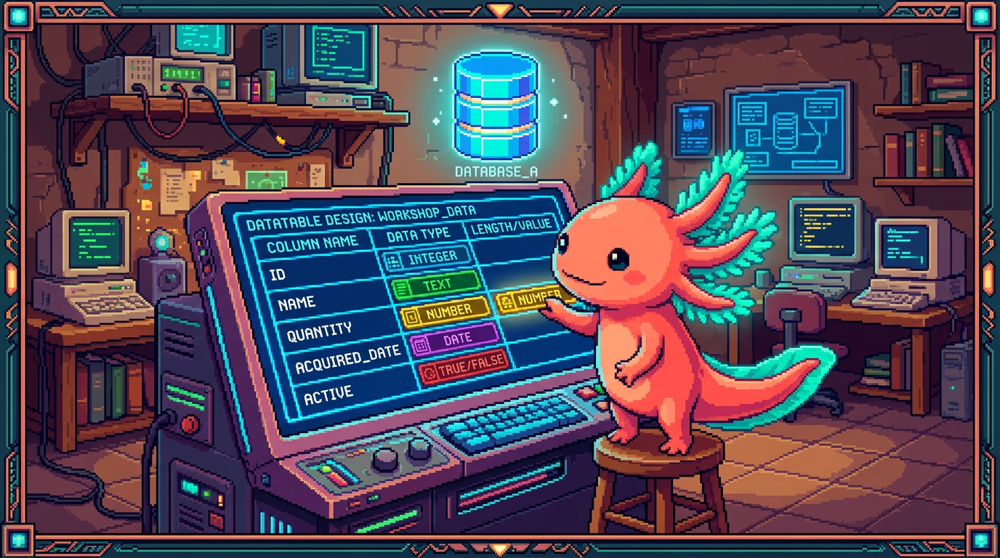

Capitulo 06 — Diseñar tablas: tipos y esquema

Hasta ahora aprendiste a leer una base de datos. Ahora vas a diseñarla: decidir qué tablas existen, qué columnas tienen y qué tipo de dato guarda cada una. Es como dibujar los planos de una casa antes de poner ladrillos. Bit, nuestro ajolote, dice que diseñar bien una tabla es el 80% de un buen proyecto: si las cajitas están bien hechas, todo lo demás encaja solo. En este capítulo usaremos las tablas reales de RachaSimple (la app de hábitos) y Faro (el organizador de proyectos), porque ambas viven en Postgres dentro de Supabase.
1. ¿Qué es diseñar una tabla?
Una tabla es una cuadrícula: filas y columnas. Diseñarla es responder tres preguntas antes de guardar nada:
- ¿De qué cosa habla esta tabla? (un hábito, un registro, un proyecto, una fase…)
- ¿Qué datos necesito de cada una? (su nombre, su fecha, si está activo…)
- ¿De qué tipo es cada dato? (texto, número, fecha, verdadero/falso…)
🟦 ¿Que significa? — Tabla
Una colección de filas que describen cosas del mismo tipo. Cada fila es una cosa (un hábito), cada columna es un dato de esa cosa (su nombre). Para qué sirve: guardar muchos elementos parecidos de forma ordenada. Dónde se usa: en RachaSimple existe la tabla
habitos, donde cada fila es un hábito que el usuario quiere construir, como "tomar agua" o "leer 10 minutos".🟦 ¿Que significa? — Columna
Un dato concreto que toda fila de la tabla tiene. Para qué sirve: definir qué información describe a cada elemento. Dónde se usa: la tabla
proyectosde Faro tiene columnas comonombre,descripcion,estadoyprogreso. Cada proyecto que analizas rellena esas mismas columnas.
Comparemos con un repo que no usa base de datos relacional: PolyPaw, hecho en Python con Flet, guarda sus datos en archivos JSON. Ahí no hay tablas ni tipos estrictos: un campo puede ser texto hoy y número mañana sin que nada se queje. Eso es cómodo para empezar, pero peligroso cuando creces. En Postgres, en cambio, cada columna tiene un tipo fijo y la base de datos te protege. Bit lo resume así: "JSON es una mochila donde tiras todo; una tabla es un cajón con compartimentos etiquetados".
2. Los tipos de columna de Postgres
El tipo de una columna define qué clase de valor puede guardar y qué reglas se le aplican. Si una columna es de tipo número, Postgres no te dejará meter la palabra "hola" ahí. Esa rigidez es justo lo que te ahorra errores.
🟦 ¿Que significa? — Tipo de dato
La categoría de valor que una columna acepta: texto, número entero, fecha, etc. Para qué sirve: garantizar que los datos sean coherentes y que Postgres pueda operar con ellos (sumar números, ordenar fechas). Dónde se usa: en RachaSimple, la columna
nombredehabitoses de tipo texto, ycreated_ates de tipo fecha-hora.
Veamos los tipos que de verdad aparecen en RachaSimple y Faro, uno por uno.
2.1 Texto: text y varchar
🟦 ¿Que significa? — text
Tipo para cadenas de caracteres de cualquier longitud (palabras, frases, párrafos). Para qué sirve: guardar nombres, descripciones, notas. Dónde se usa: la descripción que la IA genera para cada proyecto en Faro se guarda en una columna
descripcionde tipotext, porque puede ser larga.🟦 ¿Que significa? — varchar(n)
Texto con un límite máximo de
ncaracteres (por ejemplovarchar(100)). Para qué sirve: poner un tope cuando sabes que algo no debería pasar de cierto tamaño, como un nombre corto. Dónde se usa: podrías declararnombre varchar(120)enhabitospara que nadie escriba un hábito de mil letras.💡 Tip
En Postgres,
textyvarcharrinden prácticamente igual. La comunidad suele recomendartextpor defecto y validar la longitud en la aplicación. Usavarchar(n)solo cuando el límite sea una regla real del negocio.
2.2 Números: int y bigint
🟦 ¿Que significa? — int (integer)
Número entero (sin decimales), aproximadamente entre -2 mil millones y +2 mil millones. Para qué sirve: contar cosas, guardar porcentajes, posiciones. Dónde se usa: la columna
progresode un proyecto en Faro guarda un porcentaje (0 a 100) comoint. También elordende una fase para saber cuál va primero.🟦 ¿Que significa? — bigint
Número entero gigante, para valores que pueden crecer muchísimo (hasta unos 9 trillones). Para qué sirve: identificadores o contadores que un día podrían superar el límite de
int. Dónde se usa: una tabla de eventos o logs que registra millones de filas usaríabigintpara su contador autoincremental.⚠️ Cuidado
No uses
intpara un identificador que va a crecer sin freno si esperas miles de millones de filas: se te puede acabar el rango. Para porcentajes o cantidades pequeñas,intsobra. Bit recuerda: "elige el tipo más pequeño que cubra el peor caso, no más".
2.3 Verdadero o falso: boolean
🟦 ¿Que significa? — boolean
Tipo que solo guarda dos valores:
true(verdadero) ofalse(falso). Para qué sirve: representar un sí/no, encendido/apagado, activo/inactivo. Dónde se usa: en RachaSimple, un hábito puede teneractivo booleanpara saber si el usuario lo sigue practicando o lo archivó.
2.4 Fechas y horas: timestamp
🟦 ¿Que significa? — timestamp
Tipo que guarda un instante: fecha y hora juntas (año, mes, día, hora, minuto, segundo). En Supabase se usa casi siempre la variante
timestamptz, que incluye la zona horaria. Para qué sirve: saber cuándo pasó algo. Dónde se usa: la columnacreated_ataparece en casi todas las tablas de RachaSimple y Faro: marca el momento exacto en que se creó la fila.🟦 ¿Que significa? — timestamptz (timestamp with time zone)
Igual que
timestamppero guarda también la zona horaria, así un instante significa lo mismo para un usuario en Bogotá que en Madrid. Para qué sirve: evitar confusiones de horario entre usuarios de distintos países. Dónde se usa: es el tipo recomendado por Supabase para columnas de fecha; loscreated_atde Faro lo usan.💡 Tip
Para registrar solo el día sin hora (por ejemplo, "el usuario cumplió su hábito el 26 de junio"), existe el tipo
date. En RachaSimple, la tabla deregistrospuede usardatepara la columnafecha, porque importa el día, no el segundo exacto.
2.5 Identificadores únicos: uuid
🟦 ¿Que significa? — uuid
Un identificador universal único: un código largo como
a1b2c3d4-...-9f8eque casi con seguridad jamás se repite en el mundo. Para qué sirve: dar a cada fila una identidad única e imposible de adivinar. Dónde se usa: en Supabase, la tabla de usuarios usauuidcomo identificador, y RachaSimple guarda enhabitos.user_ideluuiddel dueño de cada hábito para saber de quién es.🟦 ¿Que significa? — RLS (Row Level Security, seguridad a nivel de fila)
Una regla de Postgres que decide, fila por fila, quién puede ver o modificar cada una. Para qué sirve: que cada usuario acceda solo a sus datos aunque todos vivan en la misma tabla. Dónde se usa: en RachaSimple, RLS sobre
habitosusa la columnauser_idpara mostrarte únicamente tus hábitos; en Faro, la tablauser_connectionsprotege con RLS los tokens de cada usuario.🔎 En tu codigo
En RachaSimple, la conexión entre un hábito y su usuario funciona así: cada fila de
habitostiene una columnauser_id uuidque apunta aliddel usuario autenticado. Sobre esa columna se construye la seguridad por filas (RLS), que hace que cada quien vea solo sus hábitos. Sin unuuidpor usuario, esa protección no podría existir.
2.6 Datos flexibles: jsonb
🟦 ¿Que significa? — jsonb
Tipo que guarda un documento JSON (texto estructurado con llaves y valores) de forma optimizada para consultarlo. Para qué sirve: guardar datos cuya forma varía o no quieres modelar con columnas fijas. Dónde se usa: en Faro, el roadmap o las sugerencias que devuelve OpenAI por proyecto pueden guardarse como
jsonb, porque su estructura (lista de pasos, etiquetas) cambia según el análisis.⚠️ Cuidado
jsonbes tentador para todo, pero abusar de él te lleva de vuelta al estilo "mochila JSON" de PolyPaw: pierdes las validaciones de tipo. Úsalo solo para datos genuinamente variables. Si un campo siempre existe y siempre tiene la misma forma, dale su propia columna con su tipo.
3. Reglas sobre las columnas: NOT NULL y DEFAULT
Elegir el tipo es la mitad. La otra mitad es poner reglas sobre qué valores se permiten.
🟦 ¿Que significa? — NULL
Un valor especial que significa "aquí no hay dato / desconocido". No es cero ni texto vacío: es ausencia. Para qué sirve: representar información que todavía no tienes. Dónde se usa: un proyecto recién creado en Faro puede tener
descripcionen NULL hasta que la IA la genere.🟦 ¿Que significa? — NOT NULL
Regla que obliga a que una columna siempre tenga un valor; prohíbe NULL. Para qué sirve: garantizar que datos esenciales nunca falten. Dónde se usa: en
habitos, la columnanombreesNOT NULL: un hábito sin nombre no tiene sentido, así que Postgres rechaza la fila.🟦 ¿Que significa? — DEFAULT
Un valor que Postgres pone automáticamente cuando no le das uno. Para qué sirve: ahorrarte escribir lo obvio y asegurar coherencia. Dónde se usa:
created_at timestamptz DEFAULT now()hace que Postgres ponga la fecha y hora actual sola cada vez que insertas una fila, tanto en RachaSimple como en Faro.
Veamos cómo se combinan al crear una tabla de verdad. Esta es, simplificada, la tabla habitos de RachaSimple:
create table habitos (
id uuid primary key default gen_random_uuid(),
user_id uuid not null,
nombre text not null,
descripcion text,
activo boolean not null default true,
created_at timestamptz not null default now()
);
Léelo despacio con Bit:
id: identificador de la fila, unuuidque se genera solo congen_random_uuid(). Es la clave primaria (primary key), el dato que identifica esa fila de forma única.user_id: a quién pertenece el hábito.not nullporque un hábito huérfano no debe existir.nombre: obligatorio (not null), puede ser cualquier texto.descripcion: opcional; si no la das, queda en NULL.activo: verdadero/falso, y por defectotrue(un hábito nace activo).created_at: se rellena solo con el momento de creación.
🟦 ¿Que significa? — primary key (clave primaria)
La columna que identifica de forma única a cada fila; no se repite y no puede ser NULL. Para qué sirve: poder señalar una fila exacta sin ambigüedad. Dónde se usa: en todas las tablas de RachaSimple y Faro la clave primaria es
idde tipouuid.🔎 En tu codigo
Fíjate en el patrón que se repite en cada tabla de ambos proyectos:
id uuid primary key default gen_random_uuid()ycreated_at timestamptz not null default now(). Cuando veas una tabla nueva en Supabase, busca primero esas dos líneas: son la "firma" de una tabla bien hecha.
4. Columnas generadas
A veces una columna no se escribe a mano: se calcula a partir de otras.
🟦 ¿Que significa? — columna generada (generated column)
Una columna cuyo valor lo calcula Postgres automáticamente con una fórmula sobre otras columnas de la misma fila. Para qué sirve: evitar guardar datos que se pueden derivar, y mantenerlos siempre coherentes. Dónde se usa: en RachaSimple podrías querer una columna
racha_completaque sea verdadera solo si la racha llegó a la meta, calculada a partir dedias_seguidosymeta.
Un ejemplo concreto. Imagina que en registros quieres una columna que diga el año del registro sin tener que escribirlo:
create table registros (
id uuid primary key default gen_random_uuid(),
habito_id uuid not null,
fecha date not null,
anio int generated always as (extract(year from fecha)) stored
);
Aquí anio nunca se escribe: Postgres lo deduce de fecha. Si la fecha es 2026-06-26, anio será 2026, automáticamente y siempre correcto.
🟦 ¿Que significa? — stored (almacenada)
Palabra que indica que la columna generada se calcula al insertar/actualizar y se guarda físicamente en disco. Para qué sirve: que el valor esté listo y no se recalcule en cada lectura. Dónde se usa: es la única modalidad de columna generada que Postgres soporta hoy; por eso siempre verás
storedal final.⚠️ Cuidado
No puedes escribir a mano en una columna generada: Postgres lo prohíbe. Y la fórmula solo puede usar columnas de la misma fila, no datos de otras tablas. Si necesitas algo más complejo, eso es trabajo de una vista o de la aplicación, no de una columna generada.
5. El esquema (schema) de la base de datos
Hasta ahora hablamos de tablas sueltas. El conjunto de todas las tablas, sus columnas, tipos y relaciones tiene un nombre.
🟦 ¿Que significa? — esquema (schema)
Tiene dos sentidos. (1) El diseño general: la lista de tablas y cómo se conectan, como el plano de la base de datos. (2) En Postgres, un contenedor con nombre que agrupa tablas (parecido a una carpeta). Para qué sirve: organizar y dar estructura. Dónde se usa: en Supabase, tus tablas viven en el esquema
publicpor defecto; la información de usuarios vive en un esquema aparte llamadoauth.🟦 ¿Que significa? — public (esquema público)
El esquema por defecto de Postgres donde se crean las tablas si no dices otra cosa. Para qué sirve: tener un lugar predeterminado para tus tablas. Dónde se usa: las tablas
habitos,registrosyperfilesde RachaSimple yproyectos,fasesde Faro viven todas enpublic.🟦 ¿Que significa? — auth (esquema de autenticación)
Un esquema especial que Supabase reserva para gestionar usuarios y sesiones. Para qué sirve: separar la maquinaria de login de tus datos. Dónde se usa: la tabla
auth.usersguarda a los usuarios; tu columnauser_id uuiddehabitosapunta a unidque vive ahí.
Así se ve el esquema completo (en sentido de diseño) de RachaSimple, contado en palabras:
perfiles: datos extra de cada usuario (nombre visible, preferencias).habitos: cada hábito que el usuario quiere construir.registros: cada día que el usuario marcó un hábito como hecho; aquí vive la racha.
Y el de Faro:
proyectos: cada proyecto analizado, con su descripción, estado y progreso generados por IA.fases: las etapas del roadmap de cada proyecto, con suordeny si están completas.user_connections: los tokens de GitHub y Google Drive de cada usuario, protegidos con RLS.
🟦 ¿Que significa? — foreign key (clave foránea)
Una columna que apunta a la clave primaria de otra tabla para enlazar dos filas. Para qué sirve: representar relaciones (esta fase pertenece a este proyecto) y dejar que Postgres vigile que el enlace sea válido. Dónde se usa: en Faro,
fases.proyecto_ides una clave foránea haciaproyectos.id; en RachaSimple,registros.habito_idapunta ahabitos.id.🔎 En tu codigo
En Faro, una
fasepertenece a unproyecto. Esa relación se hace con una columnaproyecto_id uuiden la tablafasesque apunta aliddeproyectos: es una clave foránea (foreign key). Así, cuando borras un proyecto, puedes hacer que sus fases se borren con él. Diseñar el esquema es, en buena parte, decidir estas conexiones entre tablas.
6. Convenciones de nombres
Postgres te deja nombrar tablas y columnas casi como quieras, pero seguir convenciones te ahorra dolores de cabeza. Bit insiste: "el yo del futuro te lo agradecerá".
🟦 ¿Que significa? — convención de nombres
Un conjunto de reglas acordadas para nombrar tablas y columnas de forma consistente. Para qué sirve: que cualquiera (incluido tú dentro de seis meses) entienda la base de datos de un vistazo. Dónde se usa: RachaSimple y Faro usan nombres en minúscula y con guion bajo, como
user_idocreated_at.
Las reglas prácticas que usan ambos proyectos:
- Minúsculas y guion bajo (
snake_case):created_at, noCreatedAtnicreated at. Postgres trata mal las mayúsculas y los espacios. - Tablas en plural:
habitos,proyectos,fases. Cada tabla contiene muchas cosas. - Columna de relación = singular +
_id:user_id,proyecto_id,habito_id. Se lee solo a quién apunta. - Tiempos con
_at:created_at,updated_at. Indica que es un instante. - Booleanos que se leen como pregunta:
activo,completada. Se entiende que es sí/no.
⚠️ Cuidado
Si nombras una columna con mayúsculas o espacios, Postgres te obligará a rodearla de comillas dobles siempre (
"Created At"). Es incómodo y propenso a errores. Quédate ensnake_caseminúsculas y nunca tendrás ese problema.💡 Tip
Sé consistente con el idioma. RachaSimple y Faro mezclan español en los nombres de negocio (
habitos,fases,progreso) con convenciones técnicas en inglés (id,created_at,user_id) que ya son estándar universal. Lo importante no es el idioma perfecto, sino no cambiar de criterio a mitad del proyecto.
7. Cómo se ve desde el cliente de Supabase
Diseñas la tabla en SQL, pero la usas desde tu app. Así inserta RachaSimple un hábito nuevo con el cliente de Supabase en TypeScript:
const { data, error } = await supabase
.from("habitos")
.insert({
nombre: "Tomar agua",
descripcion: "8 vasos al día",
user_id: usuario.id, // un uuid
// activo y created_at NO los mandamos:
// Postgres pone sus DEFAULT (true y now())
})
.select()
.single();
Mira la magia del diseño: no enviamos id, ni activo, ni created_at. Postgres los rellena solos gracias a los DEFAULT que pusimos al crear la tabla. Un buen diseño hace que el código de la app sea más corto y más difícil de equivocar.
🔎 En tu codigo
Las columnas
NOT NULLsinDEFAULTson las que tu app debe enviar siempre: aquínombreyuser_id. Si te olvidas de una, Postgres rechaza el insert con un error. Esa es justamente la protección que PolyPaw no tiene con sus archivos JSON: ahí podrías guardar un hábito sin nombre y nadie te avisaría hasta que algo se rompiera en pantalla.
✅ Checklist — ¿ya domino esto?
- [ ] Puedo explicar qué es una tabla, una fila y una columna con un ejemplo de RachaSimple.
- [ ] Sé elegir entre
text,int,bigint,boolean,timestamptz,uuidyjsonbsegún el dato. - [ ] Entiendo la diferencia entre NULL,
NOT NULLyDEFAULT. - [ ] Reconozco el patrón
id uuid primary key default gen_random_uuid()ycreated_at timestamptz default now(). - [ ] Sé qué es una columna generada y por qué no se escribe a mano.
- [ ] Entiendo qué es un esquema y por qué las tablas de Supabase viven en
publicy los usuarios enauth. - [ ] Sigo convenciones de nombres:
snake_case, tablas en plural,_idpara relaciones,_atpara tiempos. - [ ] Sé por qué un buen diseño deja menos trabajo (y menos errores) al código de la app.
🧪 Ejercicios
-
En papel. Dibuja la tabla
registrosde RachaSimple. ¿Qué columnas necesita para saber qué hábito se completó y qué día? Anota el tipo de cada una y cuáles seríanNOT NULL. -
En papel. Para la tabla
fasesde Faro, decide el tipo de estas columnas:nombre,orden,completada,proyecto_id,created_at. Justifica cada elección en una frase. -
💻 En el editor SQL de Supabase. Crea una tabla de práctica llamada
notascon:id uuidclave primaria con default,titulo text not null,cuerpo text,archivada boolean default falseycreated_at timestamptz default now(). Insértale una fila enviando solotituloy comprueba que las demás columnas se rellenaron solas. -
💻 En el editor SQL de Supabase. A tu tabla
notas, añade una columna generadalargo_titulo int generated always as (length(titulo)) stored. Inserta una nota y verifica quelargo_tituloaparece calculado sin que tú lo escribieras. Luego intenta escribir un valor a mano en esa columna y observa el error. -
💻 En el editor SQL de Supabase. Crea a propósito una columna mal nombrada (
"Fecha Creacion" timestamptz) y luego intenta consultarla sin comillas. Observa el error y reescríbela comofecha_creacion. Acabas de comprobar por qué existen las convenciones de nombres. -
De contraste. Abre cualquier archivo JSON de PolyPaw y elige tres campos. Para cada uno, escribe qué tipo de columna de Postgres usarías si esos datos vivieran en una tabla, y qué validación (
NOT NULL,DEFAULT) le pondrías. Esto te entrena el ojo para "ver tablas" donde otros ven texto suelto.